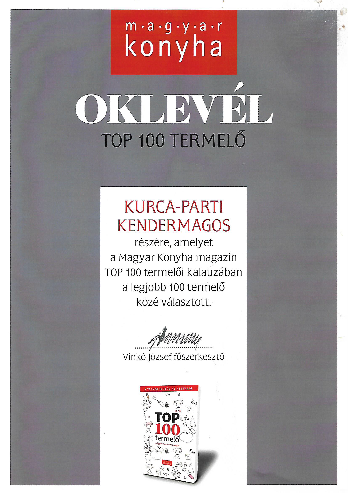

A magyarországi díjazott szakácsok, nívós éttermek kiváló minőségű, prémium termékként jellemeztek, és a 100 legjobb hazai termelői közé javasoltak bennünket, amely címet a Magyar Konyha magazin 2020 decemberében megjelenő TOP 100 Termelői kalauzában közzé is tett.
Szintén az elégedett éttermek javaslatára a Kisfaludy2030 Turisztikai Fejlesztő Nonprofit Zrt. a „Hazai (kis)termelők támogatása” keretében, a legjobb hazai gasztronómiai alapanyagok előállítóit tevékenységükkel kapcsolatos költségeikre, visszanem térítendő támogatásukban részesített.